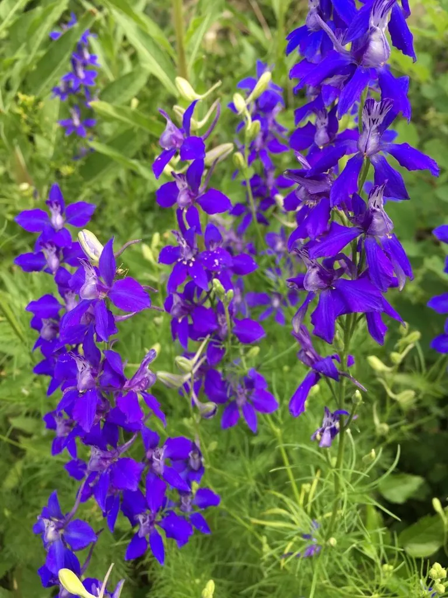

花卉与草本 · 植物界
飞燕草 Consolida ajacis

毛茛科一年生草本，蓝紫色花冠后拖细长花距，形如振翅飞燕，是花境和切花中富有动感的植物，原产欧洲南部。
- 分类
- 门被子植物门纲木兰纲目毛茛目科毛茛科属飞燕草属
- 栖息环境
- 地中海沿岸的干燥山坡与草甸，喜凉爽、阳光充足
- 地理分布
- 原产欧洲南部及地中海沿岸，中国各地庭园有栽培
- 保护级别
- 暂无评估
物种志
飞燕草为毛茛科飞燕草属一年生草本，株高 40–100 厘米，茎直立，上部疏生分枝。叶片掌状深裂，呈羽状细裂。总状花序顶生，花两侧对称，萼片呈花瓣状，后方延伸出细长的距，花色有蓝、紫、粉、白等，花期 5–7 月，果期 6–8 月，蓇葖果内含多数种子。
飞燕草原产欧洲南部及地中海沿岸，喜阳光充足、凉爽干燥和排水良好的环境，耐寒不耐酷热，适合秋播、翌年春夏开花。它因花形酷似飞燕而得名，花穗挺拔，是花境中优良的竖线条材料，也是常见的切花。需要注意的是，飞燕草全株含二萜类生物碱，有毒，误食会引起中毒，栽培和摆放时应远离儿童与宠物。
形态与习性
- 株高40–100 厘米，茎直立
- 花期5–7 月，花序自下而上开放
- 果期6–8 月，蓇葖果
- 光照喜光，也可耐轻度半阴
- 水分喜湿润，忌积水
- 土壤疏松肥沃、排水良好的壤土
- 繁殖以秋播为主
- 主要用途花境、切花、庭院点缀
趣味知识
- 飞燕草花后细长的“尾巴”其实是花距，是容纳花蜜的结构。
- 花穗由下往上依次开放，整串花期可达 3–4 周。
- 飞燕草全株含二萜类生物碱，有毒，不可入口。
- 它常被用作花境的竖线条材料，与矮生花卉形成层次。